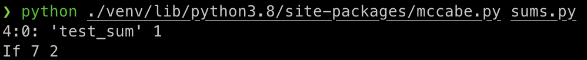
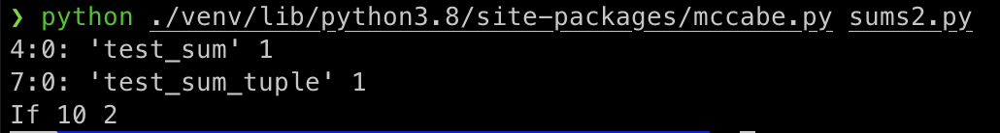

Now run the code against a variety of linters to test the code quality:
Compare the effectiveness of each tool in defining and identifying code quality. What can you conclude about the effectiveness of each approach?
Pylint and Pyflaskes provide Python coding recommendations, such as unused libraries and variables. Pycodestyle and Pydocstyle provide Python coding style recommendations, such as spaces between statements.
Run equivalence.py, which is an implementation of equivalence partitioning. You should carry out further investigations on the code and experiment with it.
def test_equivalence_partition(): relation = lambda x, y: (x - y) % 6 == 0 classes, partitions = equivalence_partition( range(-1, 10), relation ) check_equivalence_partition(classes, partitions, relation) for c in classes: print(c) for o, c in partitions.items(): print(o, ':', c)
set([5, -1])
set([0, 6])
set([1, 7])
set([8, 2])
set([9, 3])
set([5, -1])
(0, ':', set([0, 6]))
(1, ':', set([1, 7]))
(2, ':', set([8, 2]))
(3, ':', set([9, 3]))
(4, ':', set([5, -1]))
(5, ':', set([0, 6]))
(6, ':', set([1, 7]))
(7, ':', set([8, 2]))
(8, ':', set([9, 3]))
(9, ':', set([5, -1]))
What happens when the code is run?
The compile raised an IndentationError exception.
Can you modify this code for a more favourable outcome?
Yes.
What amendments have you made to the code?
I adjusted the indentation for those lines.
def factorial(n): """ Return factorial of n """ if n == 0: return 1 else: return n*factorial(n-1)
Can you correct each of the errors identified by pylint?
import string shift = 3 choice = raw_input("would you like to encode or decode?") word = (raw_input("Please enter text")) letters = string.ascii_letters + string.punctuation + string.digits encoded = '' if choice == "encode": for letter in word: if letter == ' ': encoded = encoded + ' ' else: x = letters.index(letter) + shift encoded=encoded + letters[x] if choice == "decode": for letter in word: if letter == ' ': encoded = encoded + ' ' else: x = letters.index(letter) - shift encoded = encoded + letters[x] print(encoded)
I fixed each of the errors identified by pylint.
Review the errors returned. In what way does this error message differ from the error message returned by pylint?
The flake8 library only provides a simple error message. On the other hand, pylint provides comprehensive error messages, and leads the way toward to that error.
Can you correct each of the errors returned by flake8?
Yes, but it is difficult for me to locate each of the errors because it provides a general error message only.
What amendments have you made to the code?
#CODE SOURCE: SOFTWARE ARCHITECTURE WITH PYTHON """ Module metricTest.py Metric example - Module which is used as a testbed for static checkers. This is a mix of different functions and classes doing different things. """ import random def fn(x, y): """ A function which performs a sum """ return x + y def find_optimal_route_to_my_office_from_home(start_time, expected_time, favorite_route='SBS1K', favorite_option='bus'): d = (expected_time - start_time).total_seconds()/60.0 if d<=30: return 'car' # If d>30 but <45, first drive then take metro if d>30 and d<45: return ('car', 'metro') # If d>45 there are a combination of optionsWriting Modifiable and Readable Code # [ 68 ] if d>45: if d<60: # First volvo,then connecting bus return ('bus:335E','bus:connector') elif d>80: # Might as well go by normal bus return random.choice(('bus:330','bus:331',':'. join((favorite_option, favorite_route)))) elif d>90: # Relax and choose favorite route return ':'.join((favorite_option, favorite_route)) class C(object): """ A class which does almost nothing """ def __init__(self, x,y): self.x = x self.y = y def f(self): pass def g(self, x, y): if self.x>x: return self.x+self.y elif x>self.x: return x+ self.y class D(C): """ D class """ def __init__(self, x): self.x = x def f(self, x,y): if x>y: return x-y else: # else:Chapter 2 # [ 69 ] return x+y def g(self, y): if self.x>y: return self.x+y else: return y-self.x
I adjusted the indentation for those lines, and commented out some lines.
Run mccabe on sums.py. What is the result?
Run mccabe on sums2.py. What is the result?
What are the contributors to the cyclomatic complexity in each piece of code?
It counts the number of "loops and if statements". It shows an upper bound for the number of test cases required to obtain branch coverage of the code.